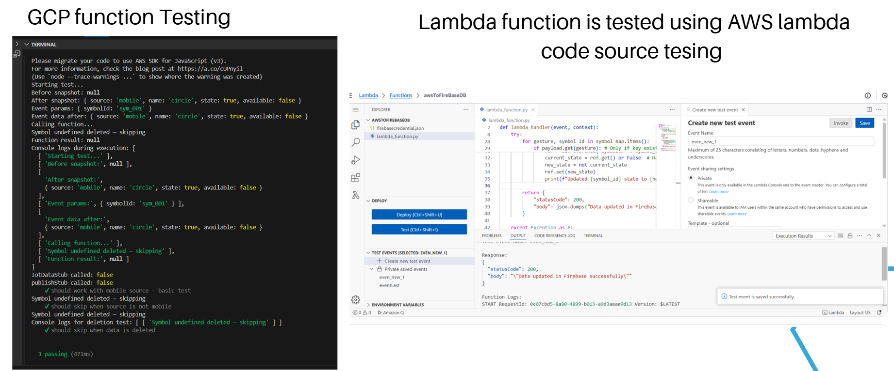
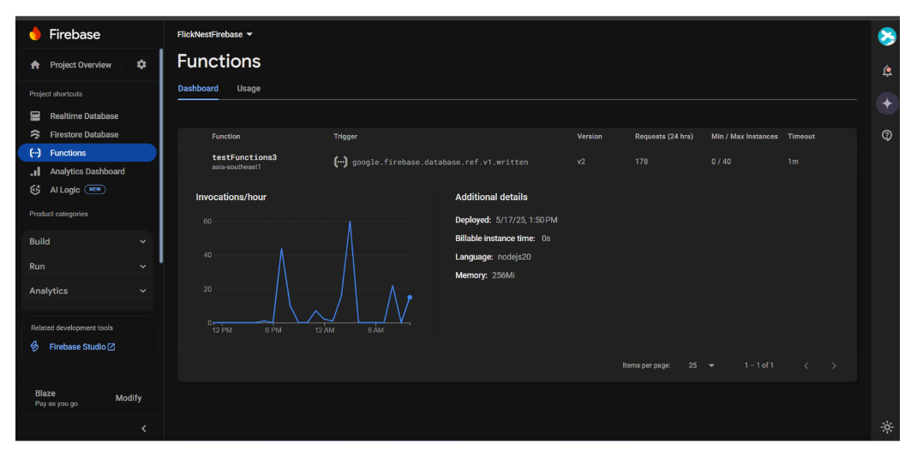

FlickNest is a gesture-controlled smart automation system that leverages wearable sensors, machine learning, and cloud services to enable intuitive, hands-free device control. It enhances accessibility, convenience, and efficiency by eliminating dependency on smartphones or voice assistants.
Problem & Solution
Many smart systems lack accessibility for elderly or physically limited users and are impractical in noisy or busy environments. FlickNest solves this with a wearable band featuring an MPU6050 sensor and ESP32 microcontroller, classifying gestures locally using Edge Impulse. Recognized gestures are securely transmitted via MQTT to AWS IoT Core or a local broker, then update Firebase for device state control.
Impact
FlickNest provides accessible, efficient smart control:
• Hands-free interaction for improved usability.
• Real-time secure control of home devices.
• Scalable and low-latency response using both cloud and local broker setups.
The system runs TinyML classification on-device (ESP32) and uses MQTT to trigger AWS Lambda and GCP Firebase updates. Flutter UI reflects real-time changes, and smart devices respond instantly. The architecture supports both cloud-based and Raspberry Pi 3-based local brokers for redundancy.
MPU6050 captures motion. ESP32 classifies gestures using Edge Impulse, authenticates via fingerprint, and publishes data via MQTT. AWS/GCP process it to update Firebase. Flutter UI reflects device states in real time. Local broker ensures offline functionality.
We conducted comprehensive testing across hardware, software, and cloud components:
1. Hardware Testing
• Validated MPU6050 sensor responsiveness, gesture accuracy (>90%), and ESP32 stability.
• Measured latency and ensured consistent response across multiple devices.
2. Software & Cloud Testing
• Tested Firebase Cloud Function (testFunctions3) integration with AWS IoT Core using firebase-functions-test, sinon, chai, and proxyquire.
• Verified bidirectional MQTT communication from mobile, ESP32, and dashboard to cloud/local brokers.

3. End-to-End Testing
• Conducted full-cycle tests using both mobile and wearable inputs.
• Confirmed real-time state updates across Flutter app, Firebase, and MQTT.
• Tested redundancy via both AWS IoT Core and local Raspberry Pi broker.
Deployment

• AWS Lambda functions and Google Cloud Functions were deployed to handle backend processing and updates to Firebase.
• A Raspberry Pi 3 running a local MQTT broker was integrated for offline/local functionality.
• The Flutter-based super admin dashboard was deployed to Vercel, providing centralized real-time device monitoring and control.